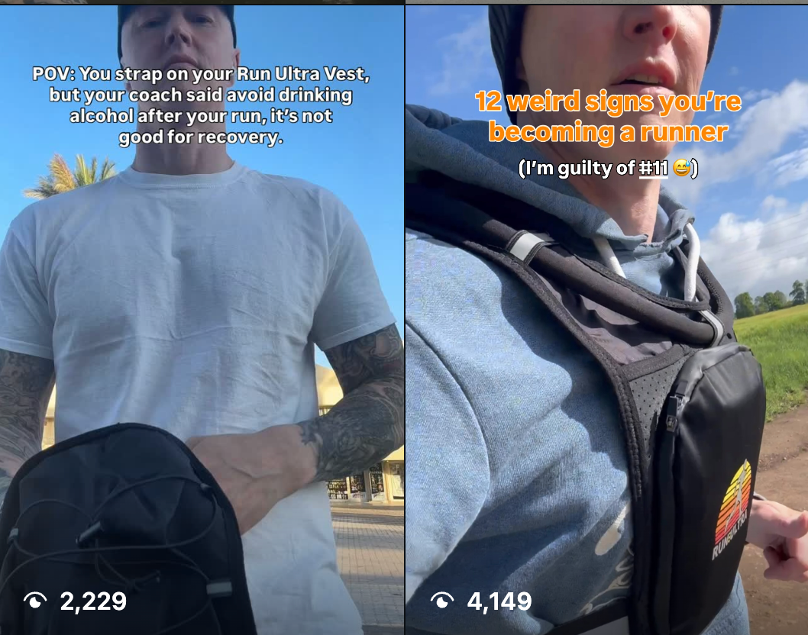
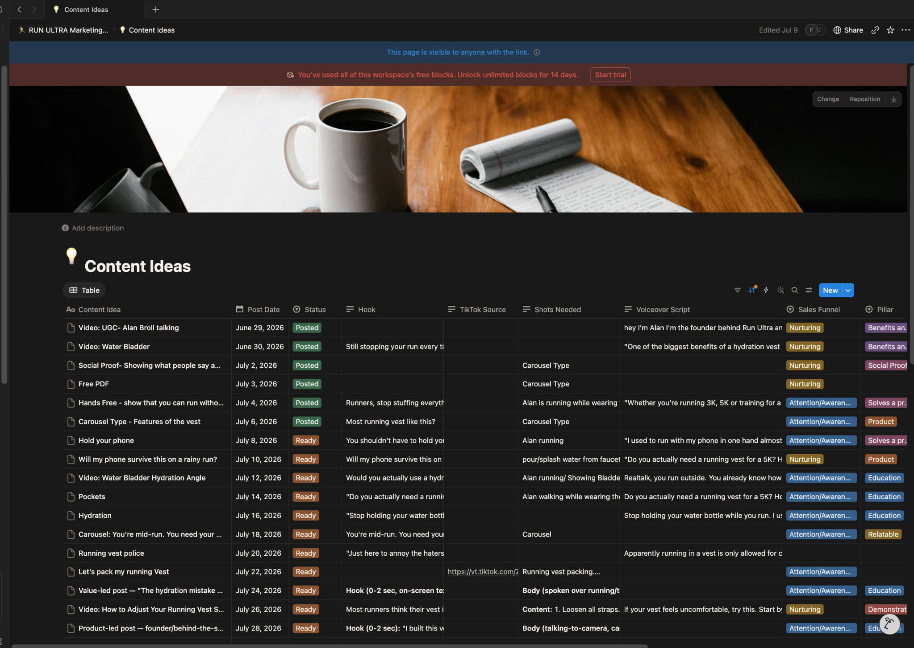
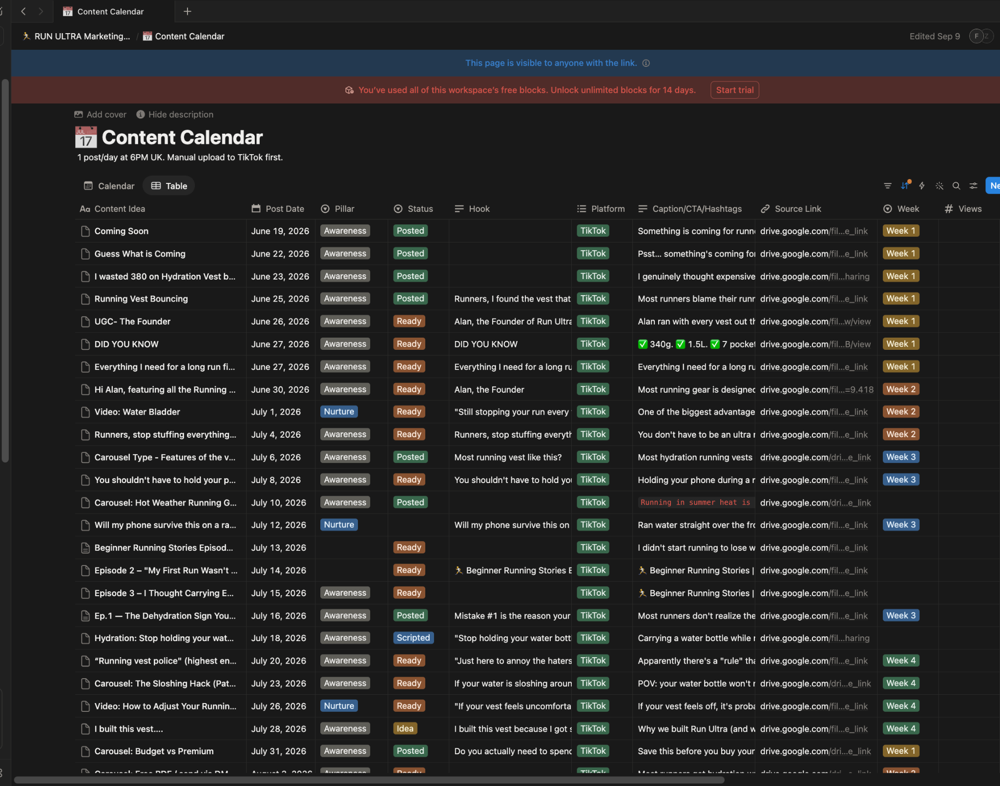
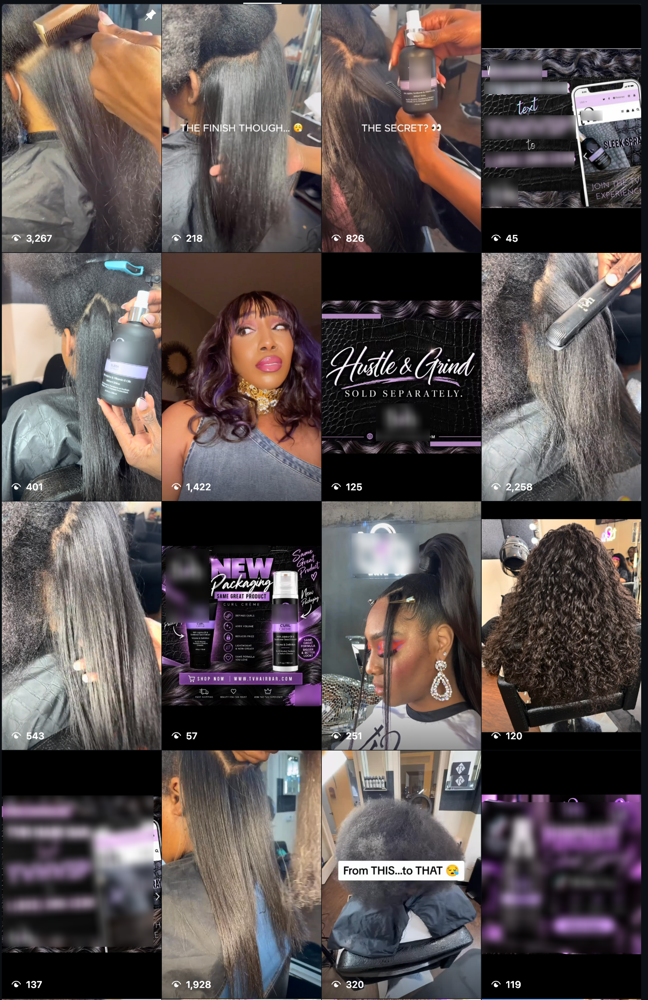
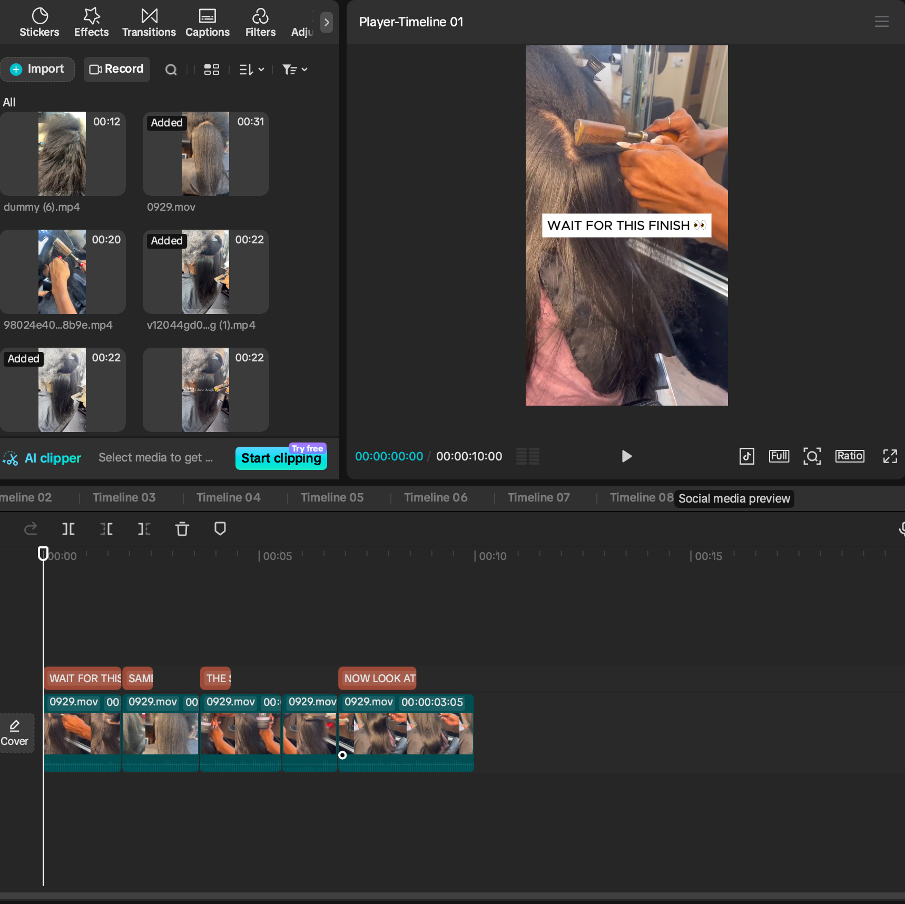

01 / CONTENT
Social Media Content Planning
Content ideas, calendars, hooks, captions, competitor research, and organized publishing plans.
I help small businesses and online brands show up consistently through content planning, short-form video editing, competitor research, and organized workflows.
Content strategy · TikTok & Reels · Content operations
I combine content creativity with practical organization to help brands manage their day-to-day social media work.
I'm a Social Media Manager and Virtual Assistant with hands-on experience supporting content planning, short-form video editing, competitor research, and social media workflows.
My work has included content support for a running-related e-commerce brand and a beauty / hair brand, as well as building a Notion-based system to organize content and tasks.
I'm comfortable with written briefs, shared documents, clear task lists, and flexible asynchronous workflows.
Practical support from planning through content preparation and workflow organization.
Content ideas, calendars, hooks, captions, competitor research, and organized publishing plans.
Prepare short videos for TikTok and Instagram Reels with attention to pacing, clarity, and message.
Notion boards, content statuses, task notes, and asset organization to make work easier to track.
Research relevant content patterns and observe performance signals to inform future content tests.
Selected examples of content planning, short-form editing, and social media support. Client work is shown for portfolio purposes; confirm permission before publishing publicly.

Supported short-form content planning for a running-gear brand, including hooks, content angles, and testing different video formats. The goal was to improve audience reach and learn which creative approaches earned attention.

Built and maintained an organized content planning workspace with ideas, posting dates, content pillars, hooks, captions, source links, platforms, and statuses such as Ready and Posted.


Supported a hair brand's social content with hair transformation videos, product demonstrations, promotional creatives, and visual storytelling designed for short-form platforms.

Edited supplied footage into a concise vertical video, arranging clips and text overlays to build a clear sequence and create anticipation for the final hair result.
A clear process, realistic communication, and a willingness to learn from what the content shows.
Clear task lists, content statuses, and documented next steps.
Content ideas and formats can be tested and refined over time.
Comfortable working from written briefs and shared workflows.
Keep only tools you have actually used and can confidently discuss with a client.
I'm available for part-time social media projects involving content planning, short-form editing, research, and workflow organization.
Part-time availability · Target rate: $7/hour
Replace this URL with your own Upwork profile link.